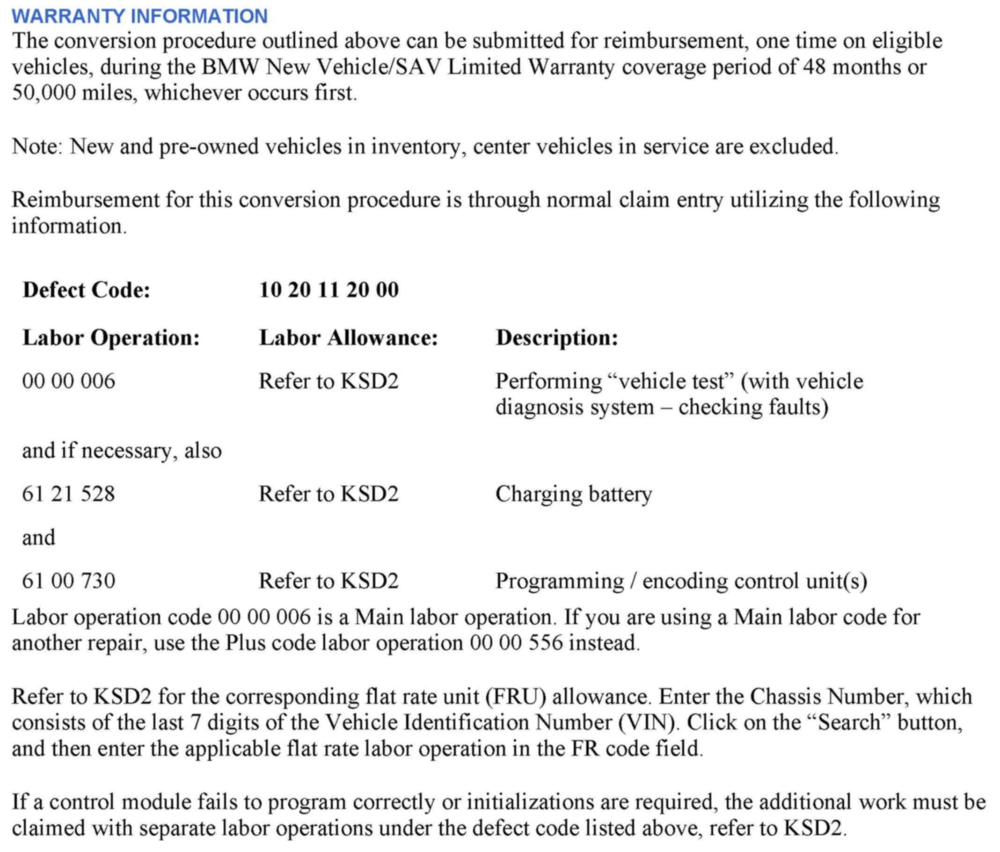
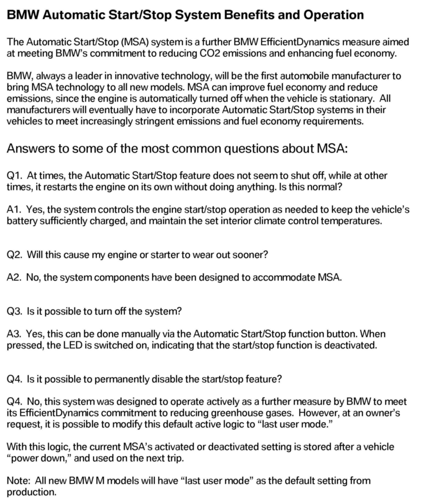

Keyless Start - MSA II System Benefits/Operation
SI B12 15 12Engine Electrical Systems
June 2012
Technical Service
SUBJECT
MSA II: Automatic Start/Stop System Benefits and Operation
MODEL
All with MSA II from 9/2011
INFORMATION
The Automatic Start/Stop (MSA) system is a further BMW Efficient Dynamics measure aimed at meeting BMWs commitment to reducing CO2 emissions and enhancing fuel economy.
BMW, always a leader in innovative technology, will be the first automobile manufacturer to bring MSA technology to all new models.
Automatic Start/Stop systems will become prevalent in the future, as manufacturers strive to meet increasingly stringent emissions and fuel economy requirements.
By automatically switching the engine off when the car is stationary, MSA can improve fuel economy and reduce emissions.
New F-vehicles now incorporate the second generation of MSA (MSA II), which has been further developed to operate in combination with an automatic transmission and the BN2020 electrical system.
A detailed description of the MSA Automatic Start/Stop function can be found in the ICP Technician library under Technical Training course ST1112.
SITUATION
Some drivers have expressed the desire to deactivate this function in certain situations. This can be done manually via the Automatic Start/Stop function button with the LED switched on, indicating that the start/stop function is deactivated.
However, by default, the Automatic Start/Stop function is reactivated each time the engine is started.
At the request of an owner, it is possible to modify this default logic to "Last user mode."
With this logic, the current MSA's activated or deactivated setting is stored and used on the next trip.
Note:
All new BMW M models have the "Last user mode" as the default setting from production.
PROCEDURE
Explain the benefits of the MSA technology to the customer:
^ The environmental benefit of reduced greenhouse gases and the financial benefit of improved fuel economy.
The attachment is a document that you can share with customers, which provides an overview and answers to some of the most commonly asked questions. It should be given to all customers at the time of sale, and placed inside service loaner vehicles equipped with MSA.
Should a customer still request "Last user mode," submit a PuMA case entitled "Activate MSA memory conversion."
^ The IBAC code necessary to perform this conversion will be provided in the response to the PuMA case.
^ Using the latest version of ISTA/P, perform the conversion "Activate MSA memory," along with a complete vehicle coding and any required programming as determined in the measures plan.
^ Upon successful completion of the measures plan, the option OMSA is added to the vehicle order.
Note:
When the ISTA system message displays: Battery voltage only "XX.XX" V. Please connect charger. Please note the displayed battery voltage reading in the repair order comments section.

WARRANTY INFORMATION

ATTACHMENT